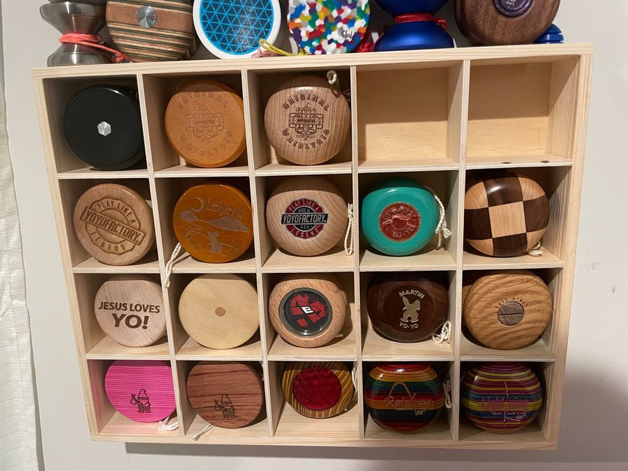
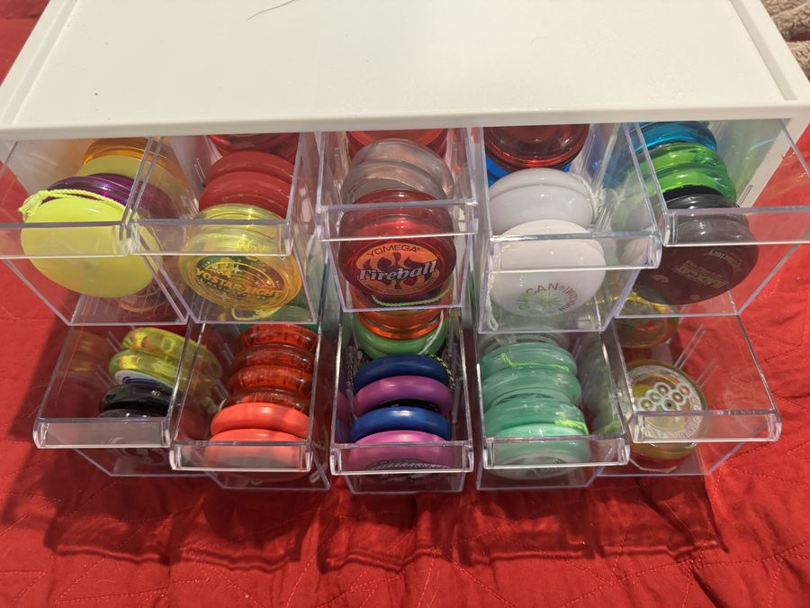

Plenty of players end up with a shelf of yo-yos, and some go all in: vintage wood, soda promotions, one-of-23 colorways, prototypes. This guide covers what people collect, the brands and eras that matter, how condition drives value, how to trade safely, and where to see the great collections. Every fact links to a numbered source.
A yo-yo collector is a bandalorist, a word coined by Doc “Lucky” Meisenheimer from “bandalore,” the name for yo-yos in the 19th and early 20th centuries before 1928.[1][2]
Vintage yo-yos from makers like Flores, Duncan, Royal, and Cheerio.[3][4]
Promotional yo-yos, especially Coca-Cola. Coke yo-yos are the most cross-collected yo-yos apart from World’s Fair pieces, sought by both yo-yo and Coca-Cola collectors.[6]
Memorabilia: contest patches and packaged string. Original Cheerio competition patches and strings command high prices from some niche collectors.[4]
Modern metal and plastic: limited colorways, small runs, prototypes, and signature models.[11][12][15]
The standard reference is Lucky’s Collectors Guide to 20th Century Yo-Yos: History and Values, with almost 2,000 entries, color plates of more than 1,000 items, a grading section, and a value index. A plain burgundy hardcover “championship” edition goes to contest division winners.[3]
Part 2
Vintage Brands and Eras
Cheerio (Canada)
Owned by Wilf Schlee, Cheerio was one of the largest yo-yo makers of the 1930s and 1940s. Its demonstrators, including Harvey Lowe, toured Canada and parts of Europe.[4]
After Cheerio entered the U.S. in the early 1940s, “Cheerio” nearly replaced “yo-yo” among kids; award patches read “Cheerio Champion” with no mention of yo-yos.[4]
Duncan bought the U.S. operation in 1954. In Canada, Cheerio outsourced its Rainbow and Big Chief models to Sweden’s Elfverson from 1958 to 1964, and a 1964 Canadian court case found “yo-yo” had lost its trademark distinctiveness, echoing the U.S. ruling.[4]
Well-preserved Cheerios fetch very high prices today.[4]
Russell and Coca-Cola
Jack Russell, a Duncan demonstrator, began tying Duncan yo-yos to Coca-Cola promotions in Atlanta in 1947; those yo-yos were stamped “Coca-Cola” on the back.[5]
In the late 1950s he formed Duncan Russell and Ives (D.R.I.) with Donald F. Duncan Sr. and Tom Ives as Duncan’s international promotions arm. When Duncan stopped financing it, Russell bought the company and its promotional molds.[5]
Russell demonstrators took the Coca-Cola yo-yo craze to 95 countries, peaking in the 1980s, with models for Coke’s other drinks too. Hundreds of Coke-sponsored models exist, including Fanta, Sprite, and Fresca versions.[5][6]
Russell also made commemoratives for U.S. Nationals and Worlds, Olympics-tied Coke yo-yos, and a yearly company Christmas yo-yo. It still made promotional yo-yos as late as 2023.[5]
Duncan
“Duncan Professionals” were the demonstrators behind most Duncan promotions. Several later founded rival companies, including Russell, SuperYo, and Spintastics.[7]
Small wooden Duncans stamped “REG. U.S. PAT” turn up in family toolboxes. Forum members guessed anywhere from the 1930s to the 1950s for one such find, and noted these little Duncans are common.[10]
Check for replicas: Duncan made many replica runs of classic models that aren’t worth much. Look for dating on the package.[8]
Limited runs: popular releases sell out fast. CLYW staggered its 2015 Yeti release in batches of 200 because demand far outstripped supply.[11] Some colorways are tiny: a CLYW Gnarwhal “Rockabilly” run was listed as just 23 pieces.[12] Players debate whether artificially small runs serve players or only collectors.[13]
Prototypes: pre-production pieces are prized. Tom Kuhn’s Turbo-Yo, the prototype for the 1990 SB-2, was made in a run of only 39.[14] Forum collectors call a rare prototype “the crown jewel” of a collection.[15]
Swappable parts: One Drop Side Effects come in many shapes and metals, from spikes and domes to Lego pegs, and have been made for licensed yo-yos from other brands.[17]
Pack-ins: some makers include collectibles you can’t buy, like Throw-Yo’s “Throw Coins,” random pack-ins with larger string and counterweight orders.[16]
Plating and rare metals: nickel, copper, silver, gold, and rare rhodium plating, plus titanium, magnesium, and bimetals, make some models more collectible. See the Science page for materials.[31]
Mint matters most to collectors. Collectors pay the highest prices, and they want the best condition possible. Once a yo-yo isn’t mint, it has largely lost the collector market, and a 1-of-10 colorway may sell for about the same as a 1-of-500.[18]
Why buyers insist on mint: a mint yo-yo proves nothing abusive happened to it. With marks, a buyer can’t tell a small drop from real damage, so they assume the worst.[18]
Re-anodized isn’t quite mint. Forum members disagree on whether a stripped and re-anodized yo-yo counts as mint; the consensus is to disclose any custom anodizing when you sell.[19]
Getting a value: post clear photos in the YoYoExpert appraisal threads, where experienced collectors weigh in.[9][8] For vintage pieces, Lucky’s guide includes a grading section and a value index.[3]
Playing vs. collecting: many players prefer a yo-yo with a few scratches they don’t have to baby. That’s a valid choice; just know it affects resale.[18]
Part 5
Buying, Selling, and Trading
Most modern trading happens on buy/sell/trade (BST) boards. YoYoExpert’s official BST rules are a good model for any marketplace:[20]
Always include photos of what you are selling, taken by you, showing any damage or flaws.[20]
List the make, model, and colorway, and describe any damage or vibe honestly.[20]
Pay with PayPal Goods & Services for buyer protection. Friends & Family payments have no protection from PayPal or the forum if a trade goes bad.[20]
Never post your mailing address or phone number publicly; send it by private message.[20]
You need to reach a basic trust level, by reading and taking part in the forum, before you can open a BST topic.[20]
Etiquette: longtime traders complain about flaking, lowballing, misleading listings, and shipping yo-yos in plain envelopes. They also note that kids sometimes back out after a parent says no, so check with a parent before you agree to a trade.[21]
Watch for B-grades sold as new and for counterfeits, especially of popular YoYoRecreation models. See Fakes and B-grades.[22][23]
Kids: DMV Throwers is family-friendly. Trade in person at a meetup with a parent or guardian when you can.
Part 6
Storage and Display
Display: collectors use wall racks, shelves, and cases; forum megathreads are full of ideas, including custom-built racks for yo-yos and spin tops.[24][25]
Unwind the string: storing a yo-yo wound tight makes the string lose its elasticity; store it unwound.[27]
Protect bearings: don’t store yo-yos with string attached for long periods; string absorbs moisture and raises the risk of rust. Keep bearings away from magnets.[28]
Keep solvents away from plastic: polycarbonate can craze, yellow, and turn brittle when exposed to solvents.[31]
Cases: see Cases and Holders on the Gear page, including DIY options.
Collections change: many players eventually thin a big collection down to a handful of favorites they actually throw.[26]

A cubby shelf: one wooden yo-yo per slot.Photo: Brandon Rogers (Captrogers), from the YoYoExpert thread Yoyo design displays

A clear drawer organizer keeps looper pairs together.Photo: Brandon Rogers (Captrogers), from the YoYoExpert thread Show us your Loopers
Part 7
Museums, Archives, and People
US National Yo-Yo Museum (Chico, California): on the premises of the Bird In Hand shop, with yo-yos from the 1920s to modern bearing yo-yos, the Duncan family collection, and Tom Kuhn’s Big-Yo, the world’s largest working wooden yo-yo. It claims to be the largest public yo-yo display in the world, with free admission and tours.[30]
Museum of Yo-Yo History (online): started by David Hall, with pieces from his collection and other curators, including many prototypes and information not found elsewhere. It went offline from October 2008 to October 2009, then returned after the community urged him to bring it back.[29]yoyomuseum.com
Doc “Lucky” Meisenheimer: Guinness record holder for the largest yo-yo collection, founding AYYA board member, chair of its history and collecting committee and world-record committee, and since 2020 director of the National Yo-Yo Hall of Fame. He hosts a monthly live YouTube show, “Doc Lucky’s Yo-Yo Talk,” on history and collecting, and created the “Doc Lucky’s Duos” contest division.[2]
More links, including the YoYo Archive, are on our Resources page.